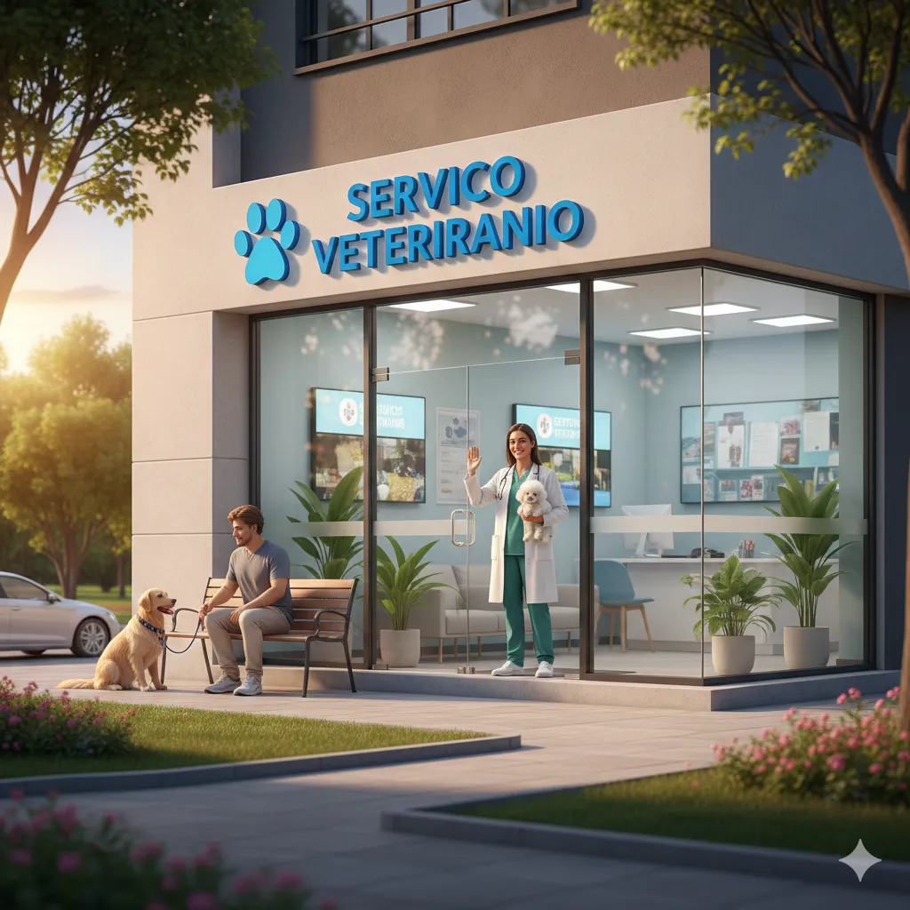
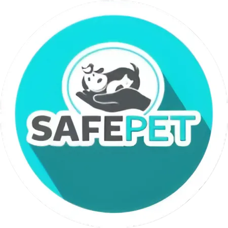
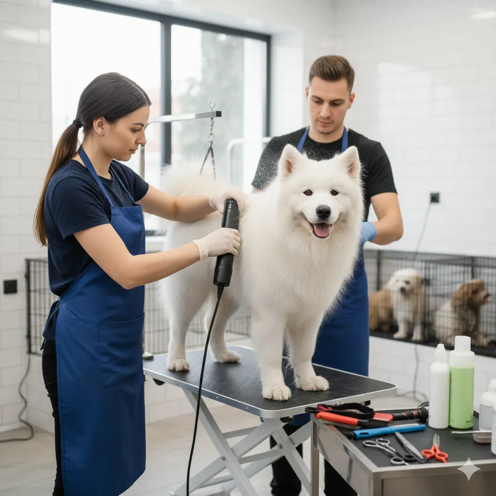
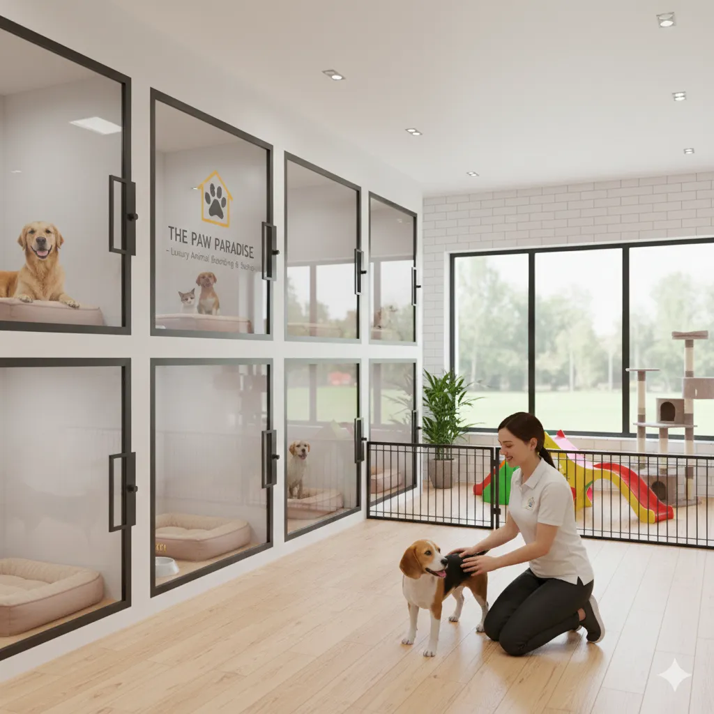
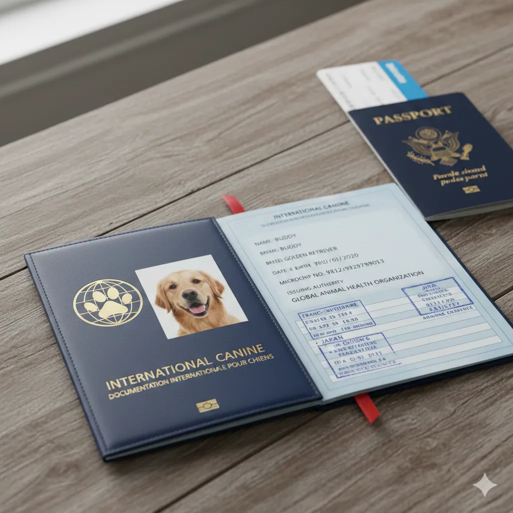
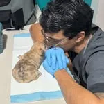
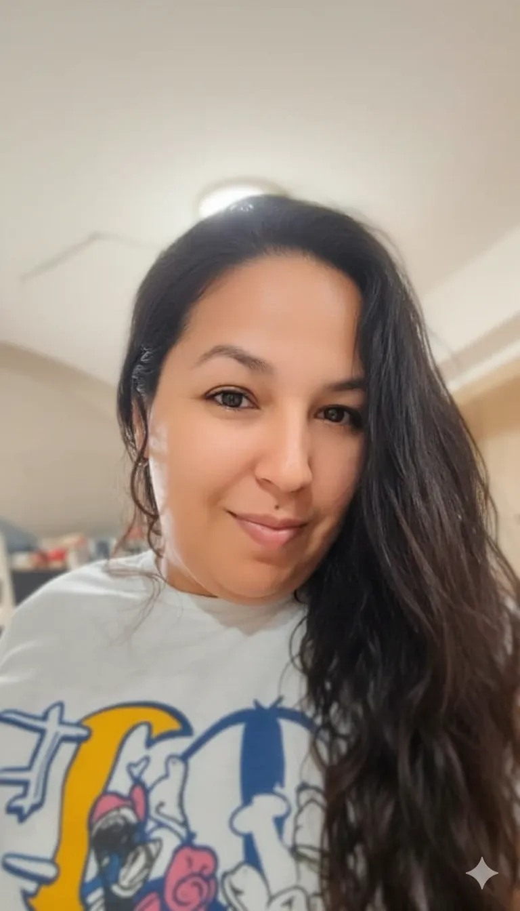

Servicio Veterinario
Consultas, cirugía y atención especializada con tecnología diagnóstica avanzada.
Pedir Consulta
Cuidado médico, hospedaje y cariño para tu compañero de vida — a la altura del lujo que ambos merecen.
0
0
0

Consultas, cirugía y atención especializada con tecnología diagnóstica avanzada.
Pedir Consulta
Cortes, spa y tratamientos con productos premium y atención especializada para cada tipo de pelaje.
Reservar Peluquería
Suites espaciosas, paseos diarios y supervisión profesional en un entorno libre de jaulas.
Reservar Suite
Gestión de certificados y trámites para viajes internacionales con asesoría experta.
Solicitar AsesoríaEspacios pensados para el confort y la seguridad de tu mascota.
Profesionales comprometidos con el bienestar de tu mascota. (Fotos y nombres de ejemplo — personalizables)
Fundadora y Presidente
Líder visionaria comprometida con la salud animal, impulsando proyectos que garantizan una atención veterinaria de alta calidad y calidez humana.
Directora Operativa (COO)
Coordinadora de la gestión administrativa y operativa, velando por la excelencia en cada uno de nuestros procesos.


"Gracias a SafePet, Bruno volvió a casa sano y feliz. ¡Servicio impecable!"
"El equipo fue muy atento con Lulú y me mantuvieron informado en todo momento."
"Profesionales y cariño con las mascotas, me gustó mucho la atención recibida."
"Atención 24/7 y una comunicación que me tranquiliza siempre. Confío plenamente en el equipo."
"Muy satisfechos con el servicio de peluquería y la limpieza del lugar."
"Siempre vuelvo por la confianza que me genera el equipo y el cariño con mi mascota."
Indicaciones y video de ruta para llegar en vehículo.
Abrir en Google Maps (Auto)